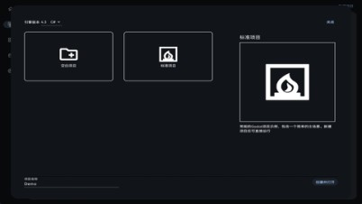

GodotHub 深度盘点：一个围绕 Godot 生态打穿下载、管理、社区的聚合器
GodotHub 把引擎下载、插件挑选、中文教程查阅、社区交流揉进一个跨平台客户端。从一键装引擎到多端协同，这篇把它的能力面完整铺开。
对 Godot 开发者来说，从上手到进阶这条路上散着不少零碎的痛点：引擎下载走外网慢到离谱、版本切换需要手动折腾路径、插件找起来没有统一入口、手机上想摸鱼看看代码片段也得翻浏览器。GodotHub官网 做的事情，就是把这些零散的环节收束到一个跨平台客户端里——桌面端做主力开发环境的管家，Android 端做移动办公时的资源中心，中间靠一套轻量的手动标记机制串起来。
这篇不做入门教程，也不挑版本细节，而是把 GodotHub 能覆盖的能力域完整地铺开盘点一遍，帮你判断它在你的开发工作流里应该处在哪个位置。
引擎管理：从下载到切换的全链路托管
GodotHub 最核心的能力域毫无疑问是引擎管理，这也是它和普通启动器最本质的区别——它不只是个下载器，而是从版本发现、组件勾选、下载安装到并排切换的全链路托管。
打开引擎管理界面，你能看到一个按发布日期倒序排列的版本矩阵：最新稳定版被标成推荐顶在最前面，下面依次是历史稳定版、测试版（beta / rc）和更早期的开发快照。每个版本旁边都会标注发布代号（比如 4.6-stable）、对应的导出模板是否可用，以及 C# / Mono 版本是否同步存在——这些信息手动下载时需要在官方页面来回翻才能凑齐，这里一眼就能看完。

选好版本后，从下载入口走的是国内镜像源，通常可以跑到自己宽带的正常速度。下载完成不用管解压路径、不用手动配置环境变量、不用记装到了哪——GodotHub 会自动完成文件校验、解压和注册，整个过程完全透明。一个完整的开发环境除了编辑器本身，导出模板、Android APK 编辑器、C# 导出模板这些配套组件也是独立勾选项，按需下载，不强制捆绑。
版本切换是另一个亮点。GodotHub 把所有下载过的版本并排安装，互不干扰。每个项目会记住自己对应的引擎版本，双击打开时自动用正确的版本启动。这意味着你可以同时维护一个稳定版做主力开发、一个 beta 版尝鲜新渲染特性，需要切的时候点一下就行，不用卸载、不用重装、不怕路径对不上。
插件与模板：生态资源的聚合入口
引擎装好只是第一步，真正让 Godot 项目跑起来还需要插件、脚本片段、项目配置这些上层资源。GodotHub 在这一层做了两件事：插件库浏览和模板系统。
插件库的价值在于聚合和筛选。Godot 的插件生态长期以来分散在 GitHub、Gitee、各个独立站点，找一个合适的插件往往要开好几个标签页对比。GodotHub 把插件集中到一起展示，每个插件附带封面、功能描述、适配的引擎版本范围，桌面端可以直接下载安装，Android 端虽然不能真正安装引擎插件，但可以先浏览、标记"想用到的插件"，回到 PC 端打开 GodotHub 就能看到这些标记，一键下载。这套跨端标记机制虽然简单，但解决了"在地铁上刷到一个好插件、回家就忘了叫什么"的实际问题。
模板系统则瞄准了另一个高频需求：新项目起步。很多团队和个人开发者都有一套固定的项目初始化习惯——常用插件组合、分辨率和触控设置、全局脚本骨架、输出目录约定。每次新建项目手动重现一遍很啰嗦，GodotHub 的模板系统允许你把这套组合保存下来，下次新建项目时一键复用，连项目设置里的那些数值都按模板填好。

多端协同：桌面主力 + Android 移动办公
GodotHub 的桌面端和 Android 端不是简单的"一个精简版"关系，而是有明确分工的两套形态。
桌面端是主力，深度集成 Godot 引擎本身：可以直接调用本机的 Godot 编辑器、自动识别已安装的版本、甚至支持纳入自己编译的自定义引擎。它的项目管理能力是完整的——所有本地项目自动收纳到列表里，双击就能用对应的引擎版本打开，不需要手动去文件夹翻 exe。
Android 端的定位很克制：它不打算在手机上复刻一个 Godot 编辑器（Godot 编辑器本身没有完整的 Android 移植版，强做只会做出一个阉割版的伪编辑器），而是专注做"移动办公时的 Godot 资源中心"。能做的事情包括查阅引擎版本信息、浏览插件库、读中文教程和代码片段、在社区板块发帖回复。导航以首页卡片和底部 Tab 为主，单手操作友好，适合在通勤或等餐的碎片时间补进度、查文档。
两端之间的数据同步机制值得单独说一下：它不走账号体系，也不做实时同步，而是靠"手动标记、各端各取"来实现弱协同。Android 端在插件库浏览时标记的插件，回到桌面端打开 GodotHub 的插件列表就能看到"已在移动端标记"的条目，点击下载；桌面端标记的引擎版本更新，Android 端下次联网时会收到通知。这套设计轻量、降低隐私顾虑，但也意味着多设备之间没有实时的状态同步，不能指望在两端同时改同一个东西然后自动合并。
离线与缓存：没网的时候还能用多少
GodotHub Android 端对离线场景做了针对性处理。已加载过的教程页面和代码片段会缓存到本地，没网时可以继续阅读；已浏览过的插件列表同样会缓存，离线时虽然不能下载，但至少可以翻一翻之前看到过哪些、标记了哪些。社区帖子的内容也会缓存，离线时能看但不能发帖回复。需要联网才能完成的核心动作只有引擎版本检查、插件下载标记同步、社区发帖回复和镜像源切换这些写操作。
缓存清理是一键式的，只删临时下载的资源文件（教程图片、插件封面、社区截图），不会碰你主动标记的插件、收藏的教程这些持久化数据。本地数据全部存在应用专属目录里，卸载 App 时自动清除，不读取系统其他应用的存储内容。
短板也要说：哪些场景它还覆盖不到
盘点完能力域，也得客观提几个目前能感受到的局限。
首先是桌面端还在 0.5.x 迭代期，一些高级功能的稳定性和完备性还在打磨——自定义编译引擎的纳入管理虽然有，但实际操作时偶尔会遇到识别不准的情况，需要手动修正，具体排查步骤可以去GodotHub文档翻一下。模板系统的导入导出功能也还没有完全打通，跨机器同步模板目前只能靠文件拷贝。
其次是多端协同的粒度比较粗。手动标记机制解决的是"发现—标记—稍后下载"这个单向链条，但如果两端同时对同一个项目做了操作，没有冲突检测和合并机制，需要自己协调。这套设计在单主力设备的场景下够用，但对有多台开发机器的重度用户来说还不够。
还有一个容易忽略的点：Android 端虽然功能边界清晰，但也意味着它的扩展空间有限。Godot 编辑器本身不打算做完整的 Android 移植，所以 Android 端永远只能停留在"资源中心"这个定位，不会演进成真正的移动端开发工具。如果你期待在手机上写 GDScript 代码、实时预览运行效果，这条路目前走不通。
什么样的人该用它
综合来看，GodotHub 在下面几类开发者的工作流里能找到明确的位置：
Godot 新手和进阶开发者。如果你还在频繁切换不同版本做学习和项目原型，GodotHub 的引擎版本管理和一键切换能省掉不少手动折腾路径的时间。模板系统对刚上手的新手尤其友好——把教程里学来的配置保存成模板，下次新建项目直接复用，不用每次从头回忆。
有固定主力开发机器、偶尔需要移动办公的个人开发者。桌面端做主力环境、Android 端在碎片时间刷插件、看教程、标记"回家要下的东西"这套组合很顺手。不需要账号体系、不需要同步配置，轻量够用。
小团队的技术负责人。如果你需要给团队统一一套引擎版本和项目初始化模板，GodotHub 的模板系统可以作为轻量的团队规范工具——把统一的插件组合和项目设置保存成模板，团队成员各自在本机拉取使用，比共享一份文档然后让每个人手动配置靠谱得多。
但如果你需要的是一个能做实时同步、跨设备无缝协作、或者能在移动端真正写代码的工具——那 GodotHub 目前还覆盖不到。它的定位很明确：桌面端是引擎管家，Android 端是资源中心，中间靠轻量标记串起来，不追求全能，只专注解决它能解决的那批实际痛点。
顺手提一句，它的配套资源在三个代码仓库都做了留存——GitHub、Gitee、GitCode，方便不同网络环境下随时查阅。